01 · Otwarcie

Kolektyw robotyki i AI · Wrocław
Machinekind
Uczymy maszyny poruszać się w świecie ludzi.
02 · Znak — plansza postojowa
03 · Punkt styku

Machinekind
Człowiek i maszyna
Punkt styku.
04 · Za chwilę — szablon zapowiedzi
Machinekind
Za chwilę
Tytuł wystąpienia.
Imię Nazwisko · rola w zespole
05 · Rozdział — szablon przerywnika
00
Machinekind
Nadtytuł rozdziału
Tytuł rozdziału.
Jedno zdanie o tym, co się za chwilę wydarzy.
06 · Domena 01 — Locomotion AI
01
Machinekind
Locomotion AI
Chód uczony
w symulacji.
Sieci sterujące chodem trenujemy w symulatorze pełnej dynamiki. Te same
trajektorie przenosimy na maszynę.
07 · Domena 02 — World Models & VLM
02
Machinekind
World Models & VLM
Rozumienie
przestrzeni.
Modele świata i modele wizyjno-językowe dają maszynie kontekst: co widzi,
gdzie może stanąć i co z tego wynika dla następnego kroku.
08 · Domena 03 — Robotics Engineering & Manufacturing
03
Machinekind
Robotics Engineering & Manufacturing
Konstrukcja
i napędy.
Napędy bezpośrednie, nogi o zamkniętym łańcuchu kinematycznym, sztywność
wzięta ze struktury zamiast z dodatkowej masy.
09 · Domena 04 — Design & Program
04
Machinekind
Design & Program
Prowadzenie
i forma.
Harmonogram, prowadzenie projektu i to, jak maszyna wygląda. Forma wynika
z obciążenia: każde wycięcie odprowadza ciepło.
10 · W01-TEK
Machinekind
Pierwsza maszyna
W01-TEK
Czworonóg. Chodzi we Wrocławiu. Baza platformy, nie wizualizacja.
11 · Teza
Machinekind
Zasada
Budujemy,
nie doradzamy.
Każda domena kończy się czymś, co się uruchamia. Nie oddajemy prezentacji.
12 · Przerwa
Machinekind
Przerwa w programie
Przerwa
Wracamy o 00:00.
13 · Pytania
Machinekind
Sala ma głos
Pytania
Odpowiadamy na to, co widzieliście — i na to, czego nie pokazaliśmy.
14 · Dziękujemy — kontakt
Machinekind
Zbudujmy następny
Dziękujemy